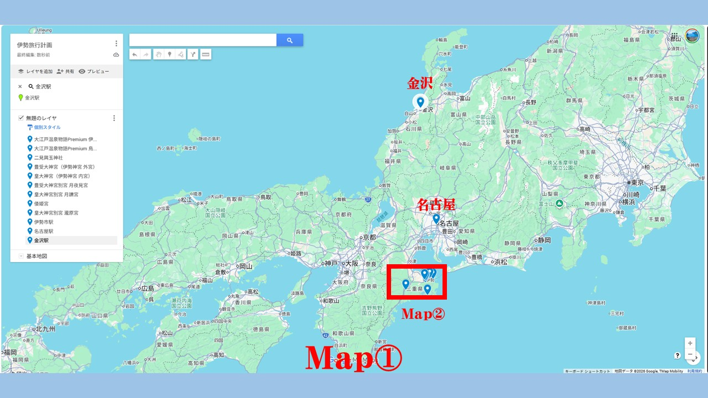
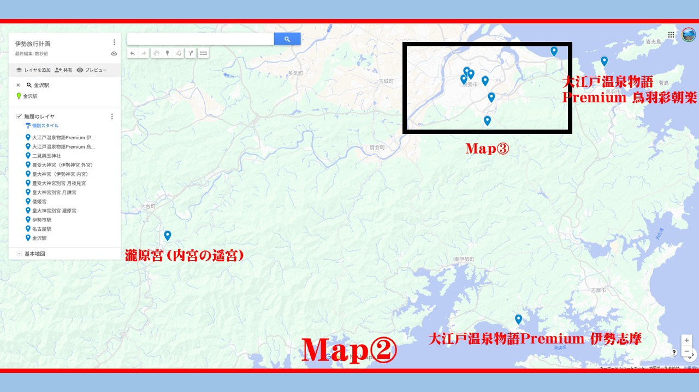
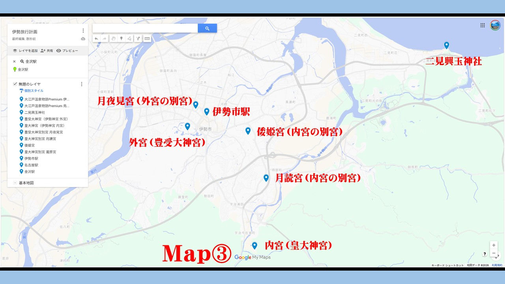

明治組 伊勢巡礼
10/28-30 レンタカー巡礼（2-3名用）
案1:伊勢志摩泊
案2:鳥羽彩朝楽泊
🚅 集合・広域ルート（Map①）
07:13 | 金沢駅 出発
新幹線➡敦賀➡しらさぎ
10:04 | 名古屋駅 集合
合流して「しまかぜ」へ
11:50 | 伊勢市駅 到着
レンタカー借受

📍 瀧原宮・宿泊地の位置関係（Map②）

🌊 案1：大江戸温泉物語P伊勢志摩
英虞湾の絶景リゾート。静かな海を堪能。
【1日目】奥伊勢 ➡ 禊 ➡ 宿泊
13:10 | ⑦ 瀧原宮（50分）
神宮の原風景へ。
15:30 | ① 二見興玉神社（30分）
夫婦岩で浜参宮。
18:15 | 宿（候補A）到着
車で約50分のドライブ。
【2日目】市街地5宮 完遂（Map③）

09:15 | ② 外宮 ➡ ④ 月夜見宮
外宮に駐車。
神路通りを徒歩往復
10:45 | ⑥ 倭姫宮 ➡ ⑤ 月讀宮
車で巡礼。
11:45 | ③ 内宮 ➡ おかげ横丁
参拝とランチ。
14:00 | 伊勢市駅 返却・解散
♨️ 案2：大江戸温泉物語P鳥羽彩朝楽
移動が短く、宿のインフィニティ風呂を長く楽しめます。
【1日目】効率ルート
13:10 | ⑦ 瀧原宮（50分）
初日に遠方を攻略。
15:30 | ① 二見興玉神社（30分）
参拝後、宿へは車で10分。
16:30 | 宿（候補B）到着
早めに温泉を満喫！
【2日目】ゆったり参拝（Map③）
09:15 | ② 外宮 ➡ ④ 月夜見宮
外宮駐車場を拠点に
徒歩散策
。
10:45 | ⑥ 倭姫宮 ➡ ⑤ 月讀宮
レンタカーで移動。
11:45 | ③ 内宮 ➡ おかげ横丁
最後は総氏神様へ。
14:00 | 伊勢市駅 返却・解散